There are two concepts when customizing Fusion’s user interface: adding buttons to allow the user to run commands and creating custom dialogs for your commands. This topic discusses adding buttons to Fusion’s user interface. The creation and use of command dialogs are discussed separately as part of the discussion on commands.
Whenever you add a button to Fusion’s user interface, you must carefully consider where it will go. There is a limited amount of room, and if every add-in writer puts their command in a permanently visible area, there won’t be room for all the commands. Consider what your command does and where the user would logically look for similar functionality. For example, if a command modifies an existing model, it should probably be added to the MODIFY panel in the Design workspace. If it helps control how the design is viewed, it should probably go in the Navigation toolbar at the bottom of the window. You should only consider adding new tabs or panels if your command does something unique from other Fusion functionality.
When dissecting Fusion’s user interface, it can be broken down into two main topics; structure and contents.
As shown below, several elements structure how the commands are presented in the user interface. The workspace is shown in blue, the toolbars in red, the toolbar tabs in yellow, and the toolbar panels in green. The toolbar controls represent the buttons in toolbars and panels, which are discussed in the “Contents” section below.
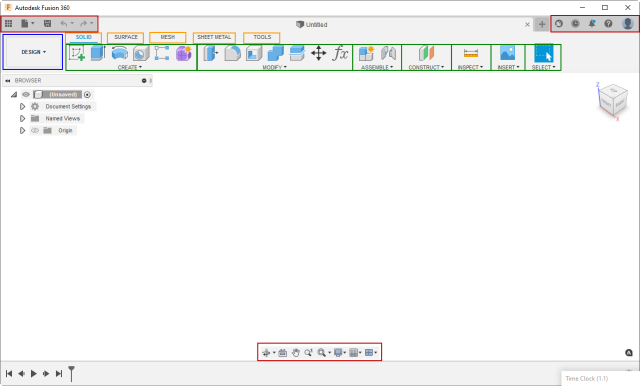
A toolbar is a container for controls. A control can be a command button or a drop-down containing more controls, as described below. There are several available toolbars, but three are always displayed. The content of these three is context-independent, so it remains the same regardless of what’s happening in Fusion. Each toolbar and all other user interface elements have unique IDs that you can use to access a specific toolbar.
The toolbar in the upper left is the QAT or Quick Access Toolbar. Its ID is “QAT”. It provides access to all the file-related commands. The toolbar in the upper right provides access to the user account and help-related commands, and its ID is “QATRight”. Finally, the toolbar at the bottom center of the window is the navigation toolbar and has all the view-related commands, and its ID is “NavToolbar”.
All toolbars are accessible from the UserInterface object through its toolbars property, which returns a Toolbars object. When you know a specific toolbar's ID, you can use the itemById property on this object to get it. The sample Python code below gets the Toolbar object that represents the QAT.
app = adsk.core.Application.get()
ui = app.userInterface
qatToolbar = ui.toolbars.itemById('QAT')
Workspaces are the top-level owner of the UI structure. The user chooses the active workspace usingWorkspaces are the top-level owners of the UI structure. The user chooses the active workspace using the large drop-down at the upper left of the Fusion window, as shown below. When changing workspaces, the entire UI morphs to show what’s appropriate for the workflow needed by the workspace. For this discussion, we’ll focus on the toolbar tabs and their contents, but changing the workspace can also change the contents of the browser and even the model graphics.
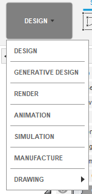
Each workspace has its own set of toolbar tabs. Toolbar tabs provide a way to organize the commands the workspace needs into logical groups. For example, you have the SOLID, SURFACE, MESH, SHEET METAL, and TOOLS tabs in the Design workspace, and each tab represents a different type of data and workflow. For example, by choosing the SOLID tab, you can access the commands for creating and modifying a solid model. However, only the commands useful when working with a mesh are shown when the MESH tab is selected.
A toolbar tab contains one or more toolbar panels. Toolbar panels organize commands into groups within the toolbar tab. Each toolbar panel consists of two parts: the panel and a drop-down. For example, in the picture below, the ASSEMBLE panel is outlined in red, and its drop-down is outlined in yellow.
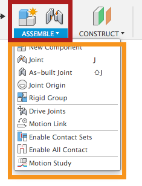
The panel shows a subset of the commands in the drop-down and provides easy access to commonly used commands. The user can control which commands from the drop-down are shown in the panel by clicking the More button
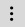
and checking or unchecking the “Pin to Toolbar” option, as shown below.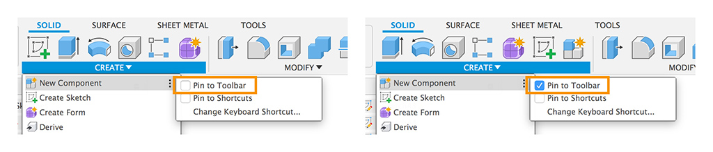
There are two ways to access toolbar panels through the API; from the toolbar tab that contains the panel or from a WorkSpace. Panels are guaranteed to be unique within a workspace, so you can access a specific panel if you know the workspace and panel ID. Getting the panel from a toolbar tab is another way to access the same panel.
If you iterate through the toolbar panels in a workspace, you will find the isVisible property for many of them is False, meaning that the panel is not currently visible. When the user selects a different tab, Fusion turns the visibility of toolbar panels on and off, so only those that apply to the active tab are seen.
We’ve examined the elements that define the structure, and now we’ll examine the content of the toolbars and panels, which are defined using controls.
Both toolbars and toolbar panels act as containers for toolbar controls. There are four types of controls: command, drop-down, split-button, and separator. In the picture below, all the buttons in the sketch toolbar panel and the associated drop-down menu are command controls, and a command is started when clicked. The Rectangle, Circle, Arc, and Polygon items are drop-down controls because they display a menu when clicked. The line between the “Create Sketch” and “Line” commands is a separator control used to separate and structure a menu's contents visually.
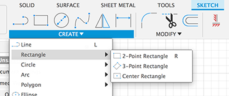
The control below is a split button with a small arrow to the right. When the button is clicked, the command displayed on the button is executed, and when the arrow is clicked, a drop-down appears, allowing a choice of other commands. Optionally, the last command picked in the drop-down can become the default command at the top level.
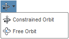
As stated earlier, controls are the visible item you see in the user interface. However, a control serves as a placeholder within a toolbar, and we see that all of the intelligence (text, icon, tooltip, etc.) comes from an associated command definition. Therefore, every control references a command definition to be able to display itself.
Command definitions contain all the information defining how a control looks and behaves. A command definition isn’t directly visible but is referenced by a control, which uses the information in the command definition to display itself. Having the command definition separate from the control makes it possible to have the same command in more than one place in the user interface. For example, you can add your command to the DESIGN and MANUFACTURE workspaces. Even when you add your command to a single toolbar panel, there are two controls when the user has pinned the command to the toolbar. In this case, these are two unique controls (one in the panel and one in its drop-down), but both controls reference the same command definition and will behave the same when clicked. If you modify a property of the command definition, that change is automatically reflected in all controls referencing that command definition. For example, if the isEnabled property of the command definition is set to False, all controls referencing that command definition will become disabled. Also, when the user clicks any of the controls associated with the command definition, the commandCreated event of the command definition is fired so you can do whatever action the command is supposed to do.
To create a new control, you must first create a command definition. A one-to-one relationship typically exists between a command definition and what the user thinks of as a command. There are three types of command definitions (button, check box, and list), and you choose the type based on how you want the command displayed in the user interface. For example, a button command definition creates a button, while a check box command definition results in a single check box. The example below shows a drop-down control that contains four check box commands (Layout Grid, Layout Grid Lock, Snap to Grid, and Incremental Move). It also contains two button commands (Grid Settings and Set Increments).
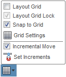
The list command definition defines a command displayed as a drop-down with an associated list of checkboxes, radio buttons, or text items. Below is an example of a checkbox list. When “Effects” is clicked, the drop-down is displayed while the user checks and unchecks items in the list. The list remembers any changes, showing the current state the next time it is displayed.
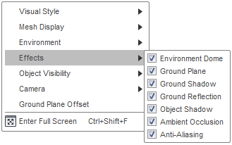
Below is an example of a radio button list. When “Visual Style” is clicked, the drop-down is displayed, and the user can select one item in the list, then the drop-down is dismissed. As you expect with radio controls, users can only select one item at a time. The list remembers the selected item, so it will show it the next time it is displayed.
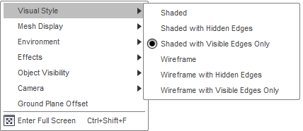
Below is an example of a standard item list consisting of text items. When “Programming Resources” is clicked, the drop-down menu is displayed, and the user can pick a single item from the list, and then the drop-down menu is dismissed. In the case of a standard item list, there’s no notion of a “selected” item or state, so nothing is pre-selected when it’s initially displayed.
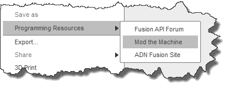
The API has a single CommandDefinition object type, but each CommandDefinition has an associated ButtonControlDefinition, CheckBoxControlDefinition, or ListControlDefinition object. These three derive from the generic ControlDefinition class. This structure is represented in the object model chart below, along with the Toolbar, Workspace, ToolbarPanel, and various ToolbarControl objects discussed earlier.
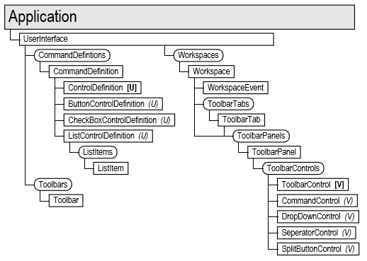
Below is some Python code that demonstrates using some of these objects by creating a button and adding it to the bottom of the ADD-INS panel of the MODEL workspace. It also connects to the commandCreated event of the button definition to get a notification when the button is clicked. You can read more about commands in the Commands topic.
# Get the UserInterface object and the CommandDefinitions collection. ui = app.userInterface cmdDefs = ui.commandDefinitions # Create a button command definition. buttonExample = cmdDefs.addButtonDefinition('MyButtonDefId', 'Sample Button', 'Sample button tooltip', './/Resources//Sample') # Connect to the command created event. buttonExampleCreated = ButtonExampleCreatedEventHandler() buttonExample.commandCreated.add(buttonExampleCreated) handlers.append(buttonExampleCreated) # Get the "DESIGN" workspace. designWS = ui.workspaces.itemById('FusionSolidEnvironment') # Get the "ADD-INS" panel from the "DESIGN" workspace. addInsPanel = designWS.toolbarPanels.itemById('SolidScriptsAddinsPanel') # Add the button to the bottom. buttonControl = addInsPanel.controls.addCommand(buttonExample) # Make the button available in the panel. buttonControl.isPromotedByDefault = True buttonControl.isPromoted = True
Typically, you’ll add commands when your add-in is loaded, which modifies the Fusion user interface only for the current Fusion session. Fusion does not remember any edits made to the user interface, so everything is restored to its default state the next time Fusion runs, and your add-in will need to re-create its commands each time it starts up. If the user unloads an add-in using the Scripts and Add-Ins command, all of its commands will be displayed for that session but are dead because the add-in is no longer running to handle the commandCreated events. Your add-in must clean up and delete any user interface elements it has created to prevent this. It does this in its stop function, which Fusion calls when the add-in is unloaded. Your add-in should delete both the command definitions and controls.
The Python code below demonstrates deleting the command definition and control that were created above.# Get the UserInterface object and the CommandDefinitions collection. ui = app.userInterface cmdDefs = ui.commandDefinitions # Delete the button definition. buttonExample = ui.commandDefinitions.itemById('MyButtonDefId') if buttonExample: buttonExample.deleteMe() # Get the "DESIGN" workspace. designWS = ui.workspaces.itemById('FusionSolidEnvironment') # Get panel the control is in. addInsPanel = designWS.toolbarPanels.itemById('SolidScriptsAddinsPanel') # Get and delete the button control. buttonControl = addInsPanel.controls.itemById('MyButtonDefId') if buttonControl: buttonControl.deleteMe()
Many of the UI controls you create using the API support the use of icons. In Fusion, an icon is defined by specifying a folder. That folder contains the images that will be used for the icon. The folder has a unique name, but the images use common names that signify how they are to be used. Icons can be defined using a PNG file (bitmap) or an SVG file (vector). Icons can be displayed in two different sizes: small and large, which are shown below. The command buttons in the panel are large, and those in the drop-down are small.
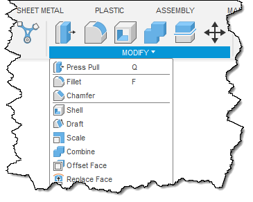
For a standard resolution screen, small icons are 16x16 pixels, and large icons are 32x32 pixels. Conceptually, you should think of all icons as either 16x16 or 32x32.
Below is an example of how an icon can be designed to be the most effective for its size. The first thing to notice is that they are not just scaled versions of each other. The window frame is 1 pixel in both icons, while the cog and title bar are smaller. At 16x16, the window border no longer cuts into the cog, and the button in the title bar has been removed because the bar is only 2 pixels tall. In summary, the line weight remains constant, but details become smaller and simplified in the smaller icon.
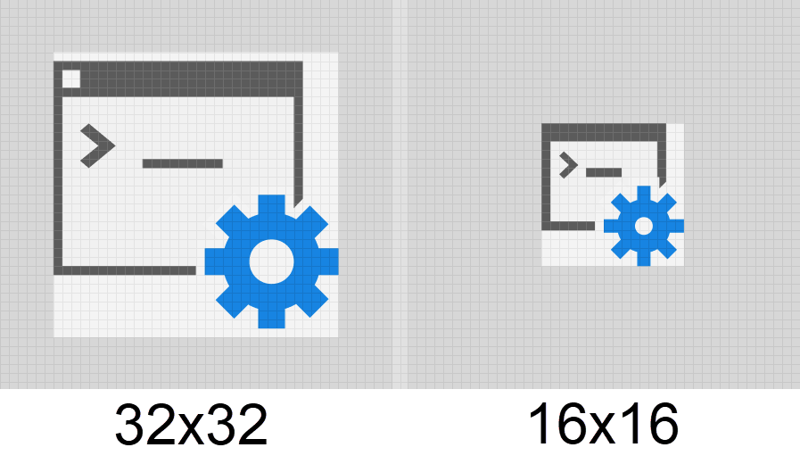
Both SVG and PNG files are supported for icons. Support for SVG is more recent, and is the preferred format, especially for icons that do not contain text. However PNG format is still supported.
Fusion supports SVG 1.2 and also the more common features of SVG 2.0 including
As mentioned earlier, icons should be thought of as 16x16 pixels or 32x32 pixels; however, when Fusion is used on a high-resolution display, higher-resolution icons are needed to ensure they look good. Because of this, for the small icon, there is a 16x16 pixel icon for a standard display and a 32x32 pixel icon for a high-resolution display. For the large icon there is a 32x32 pixel icon for a standard display and a 64x64 pixel icon for a high-resolution display. It would seem there are effectively three sizes: 16x16, 32x32, and 64x64. However, that is incorrect because the 32x32 pixel icon for the small icon is not interchangeable for the 32x32 pixel icon for the large icon. The 16x16 and 32x32 pixel images for the small icon are designed to meet the previously discussed goals; the line weight remains constant, and the details become smaller and more simplified. The 32x32 and 64x64 pixel images for the large icon use the same line weight as the smaller icon, but can have more detail. Therefore, there are four images in total: two for the small icon and two for the large icon. If a needed icon file is missing, Fusion will use an existing icon and scale it as needed.
This is a special token that can be combined with the other tokens listed below and indicates a size scaling.
These tokens define images used for specific themes within Fusion. They are typically the same as the standard image but with different coloring.
If you don’t provide a required image, Fusion will automatically use another size or create a placeholder image with the correct name and the picture of a question mark. If you see a question mark for any of your commands, you’re missing one of the required images, and you’ll need to replace it with the correct image.
Resources are defined by specifying the path to the resource folder. The path to the resource folder can be defined using a relative or full path. A relative path is relative to the main .py, .dll, or .dylib file. For example, for the folder structure shown below, the relative path to the images for the Keyhole command in the SketchShapes add-in is "./Resources/Keyhole" since the SketchShapes.py file is in the SketchShapes folder.
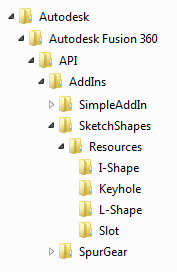
As you can see from the example above, there is a folder for each command. Each folder contains its own set of icon image files, as described above.
There are two steps to positioning your command within the Fusion user interface. The first is to determine where you want to add your command. The ideal location is where someone familiar with Fusion would intuitively look for your command. The best approach is to run Fusion and see if you can find any existing commands similar to your command. For example, if your command does something with a sketch, it should be with the other sketch commands. It will help if you are critical about your choice to create a new tab or panels. Creating tabs and panels only makes sense when your functionality is unique from existing commands. This choice is subjective, and you can do anything you choose, but your users will be annoyed if you do something illogical or take up unneeded space.
The second step is the most challenging part of adding a new command to Fusion's user interface. This step is to get the information you need to position the control in the desired location. For example, to create a new control in a panel, you'll need the ID of the workspace that contains the panel, the ID of the panel, and the ID of the command you want your command to be next to.
Let's look at a typical example and the process used to get the information you need. For this example, we want to insert a button for a command called "Custom Pocket". The command creates new geometry in a solid model, so we want to add it to the DESIGN workspace. In addition, because it works on solid models, we want to add it to the CREATE panel on the SOLID tab beneath the "Emboss" command, as shown below.
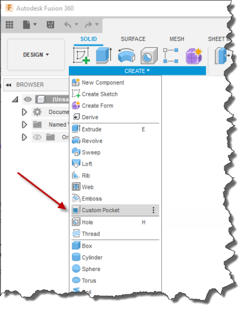
To position the button, we need the ID’s of the DESIGN workspace, the CREATE panel, and the "Emboss" command. A complete list of user interface IDs is not published because the user interface is dynamic since add-ins can customize it however they want. Instead, what's provided is a script that creates a report of the current state of the user interface. The script is the Write user interface to a file Sample sample script. To use it, create a new Python script, copy the sample code into the script, and run it. It will read your Fusion user interface layout and export it as an XML file.
You can open the XML file in VS Code or any editor that works with XML files. The file is exported as XML to allow the data to be structured and make it easier to read and manipulate. The file is large, and looking through it for a specific item would be tedious. However, if you take advantage of the XML structure, it becomes much more manageable. If you press Ctrl + K and then Ctrl + 0 (zero), you'll invoke the Fold command to collapse the structure to one visible level. Ctrl + K, Ctrl + J will unfold it, making the entire tree visible. You can also fold to a specific level using Ctrl + K and Ctrl + (number), where (number) defines the number of levels to display. Clicking the > sign to the left of an element will expand the structure below it. The picture below shows the tree fully folded; the middle picture shows it expanded to one level, where we can easily see there are 16 workspaces and 11 toolbars defined. The picture on the right shows the Workspaces node expanded, where we can see all the workspaces' names and IDs. It's now relatively easy to scan this list and find the "Design" workspace where we want to insert the button.
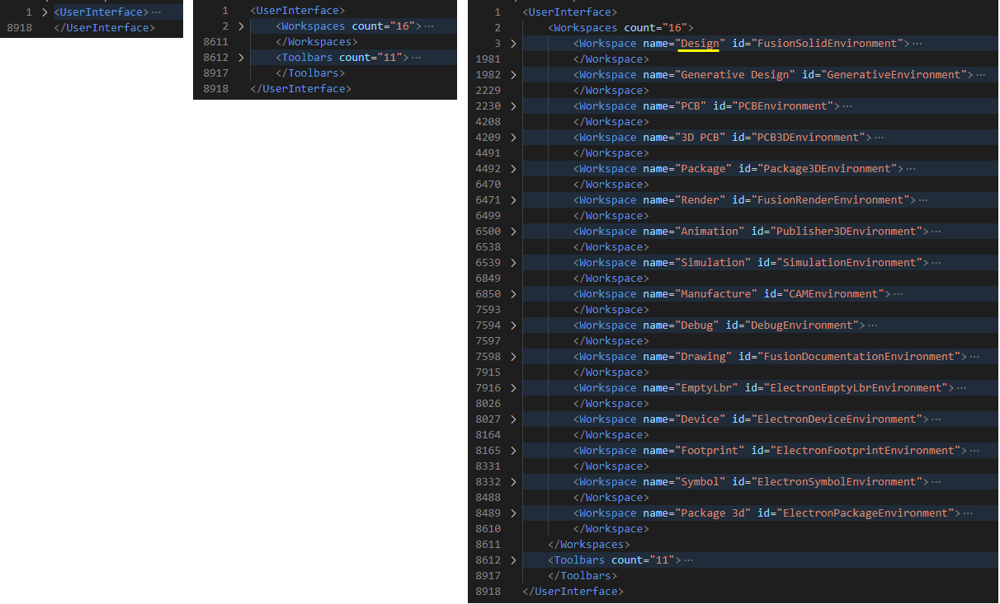
Now that we've found the workspace we want to use, we can expand the tree to find the SOLID tab, the CREATE panel, and the Emboss command. The names underlined in yellow are the same as those in the Fusion interface and are what you would use when searching. However, we need the IDs of each of these elements, which are underlined in green.
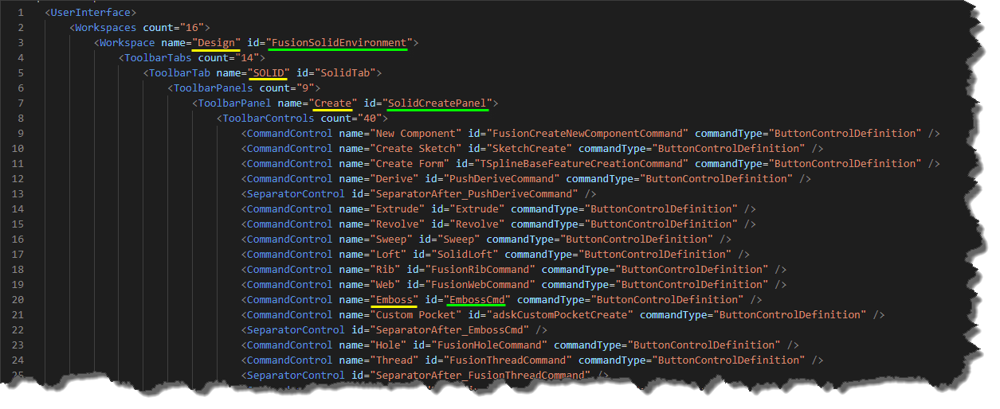
The code below adds the command button to the user interface using the IDs underlined above.
# Get the DESIGN workspace.
designWS = ui.workspaces.itemById('FusionSolidEnvironment')
# Get the CREATE panel.
createPanel = designWS.toolbarPanels.itemById('SolidCreatePanel')
# Add a new button after the Emboss control.
buttonControl = createPanel.controls.addCommand(customPocketCmdDef, 'EmbossCmd', False)
You might notice that the code doesn't use the toolbar tab. Because panels are unique within a workspace, having the ID of the workspace and the panel is enough to get the panel. The code below will also work since getting the panel from the tab is possible.
# Get the DESIGN workspace.
designWS = ui.workspaces.itemById('FusionSolidEnvironment')
# Get the SOLID tab.
solidTab = designWS.toolbarTabs.itemById('SolidTab')
# Get the CREATE panel.
createPanel = solidTab.toolbarPanels.itemById('SolidCreatePanel')
# Add a new button after the Emboss control.
buttonControl = createPanel.controls.addCommand(customPocketCmdDef, 'EmbossCmd', False)
Here's another example that adds a command to the QAT toolbar. In this case, we want to insert "My Special File Command" in the file drop-down of the QAT above the "3D Print" command, as shown below.
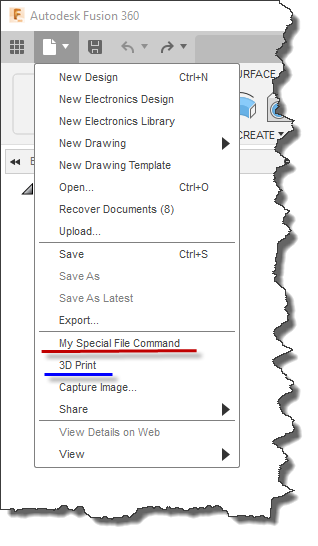
To do this, you need the ID of the QAT toolbar, the ID of the File drop-down, and the ID of the "3D print command." Expanding the Toolbars sections of the XML allows you to identify each and find their corresponding ID, as shown below.
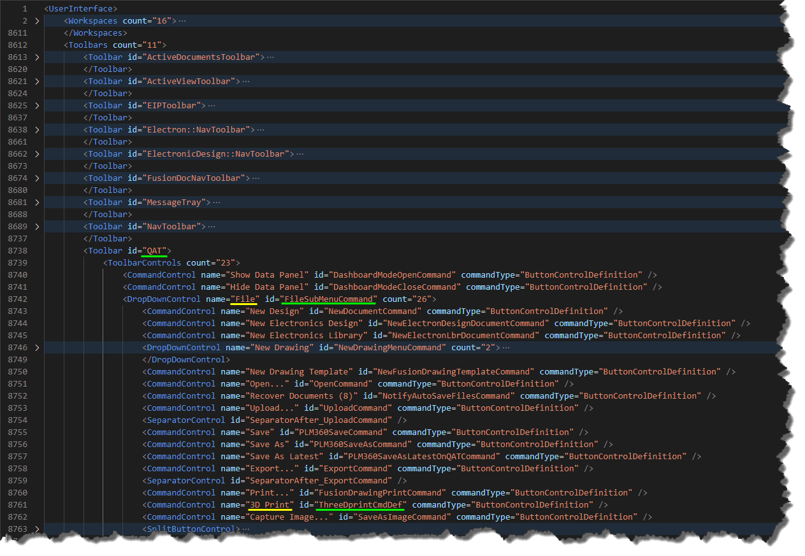
Knowing the IDs, here's the code that adds the new button.
# Get the QAT toolbar.
qat = ui.toolbars.itemById('QAT')
# Get the drop-down that contains the file-related commands.
fileDropDown = qat.controls.itemById('FileSubMenuCommand')
# Add a new button before the 3D Print control.
buttonControl = fileDropDown.controls.addCommand(myCommandDef, 'ThreeDprintCmdDef', True)